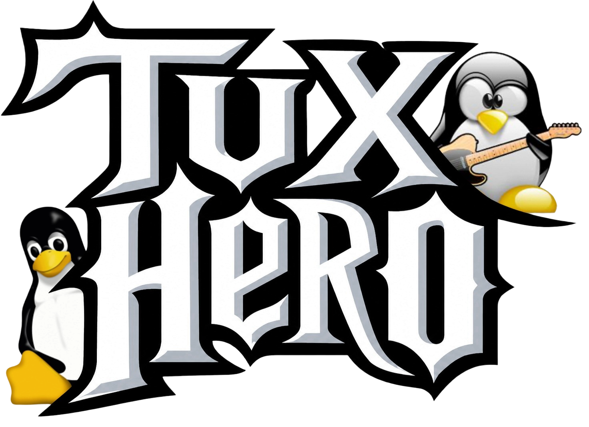

Pontuação: 0
Maior sequência: 0
Multiplicador: 1X
Sequência: 0
PREPARE-SE!
X
(fechar instruções)
COMO JOGAR
Quando as notas chegarem aos círculos, pressione a tecla da cor correspondente.
Acertos consecutivos aumentam seu combo e multiplicador.
Controles: A, S, D, F, G.
A
S
D
F
G
TUX HERO
· CONTROLES AO VIVO
COMO JOGAR
OLHAR AO REDOR
PAUSAR JOGO
SILENCIAR
VOLTAR AO MENU
PONTUAÇÃO 0
COMBO 0
PAUSAR / ESC
JOGO PAUSADO
CONTINUAR
REINICIAR
VOLTAR AO MENU
CLIQUE E ARRASTE PARA OLHAR
APRESENTA
TUX HERO
PRESSIONE ENTER OU ESC PARA PULAR
ENTER / ESC — PULAR
JOGO RÁPIDO
▶
MODO CARREIRA
MULTIJOGADOR
SELECIONAR MÚSICA
CONFIGURAÇÕES
CRÉDITOS
← VOLTAR